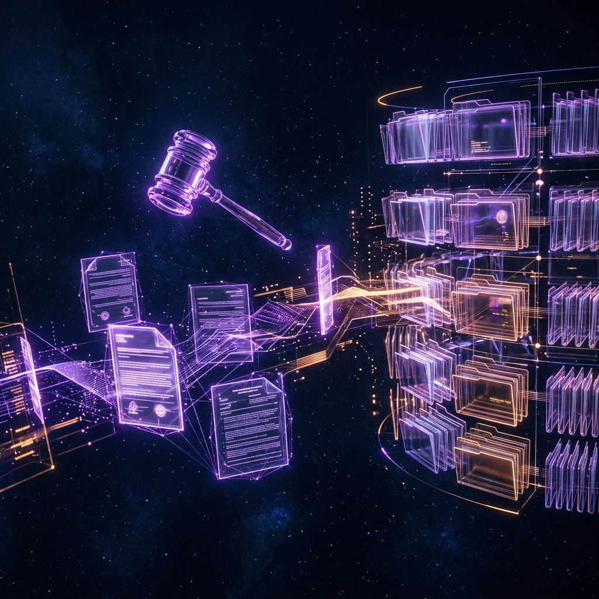

An Agentic AI system engineered for real-time anomaly detection. Parses continuous data streams, utilizes LLMs to reason over anomalies, and autonomously generates actionable mitigation strategies. Built for the Synaptics AI Hackathon (SASTRA 2026), achieving a top score of 18.200 in the Applied GenAI track.
An AI-powered pre-court dispute understanding tool designed to reduce judicial backlog. Takes raw, emotionally charged inputs, sanitizes them, identifies core legal issues, and provides narrative reasoning for structured, de-escalated conflict resolution suggestions. Built for the Gemini 3 Hackathon.
A highly optimized algorithmic strategy game with a custom-built JavaFX UI. Engineered complex game theory mechanics via memoization and transposition tables, drastically reducing AI opponent computation time. Features a strictly corrected 10-second turn counter using asynchronous threading.
A full-stack financial modeling engine projecting inflation-adjusted retirement corpuses based on dynamic user variables. Strictly engineered to meet WCAG 2.1 AA accessibility standards while maintaining HDFC brand compliance. Built for the HDFC FinCal Innovation Hackathon.
A rigorous academic deep-dive into MenuetOS — evaluating extreme performance benefits and trade-offs of a system written entirely in x86-64 Assembly. Analyzed its monolithic kernel structure, GUI implementation at the assembly level, and preemptive multitasking efficiency.
A mobile application engineered for low-connectivity agricultural environments. Implemented robust local caching and background sync mechanisms to ensure seamless offline data collection, syncing perfectly with cloud databases once connectivity is restored.
A scalable application for legal case tracking and scheduling. Architected with clean code principles, strict modularity, and high reliability by intentionally removing external hardware dependencies — focusing on robust data entry, search efficiency, and secure record management.

A full-stack platform streamlining institutional dining operations. Features real-time inventory tracking, student meal plan authorization, and waste reduction analytics. Utilizes PostgreSQL for ACID-compliant transactions and Express.js for a responsive backend API.